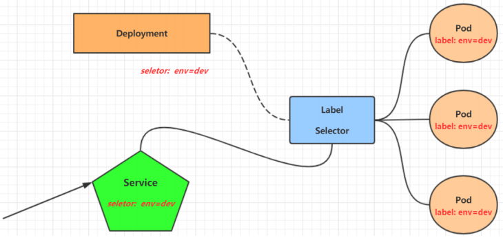

Kubernetes-Service
虽然每个 Pod 都会分配一个单独的 Pod IP，然而却存在如下两问题：
Service可以看作是一组同类 Pod
对外的访问接口。借助Service，应用可以方便地实现服务发现和负载均衡。

操作
集群内部访问的Service
1
2
3
4
5
6
7
8
|
kubectl expose deploy nginx --name=svc-nginx1 --type=ClusterIP --port=80 --target-port=80 -n dev
kubectl get svc svc-nginx -n dev -o wide
[root@master ~]# curl 10.109.179.231:80
|
创建集群外部可以访问的Service
1
2
3
4
5
6
7
8
9
10
|
kubectl expose deploy nginx --name=svc-nginx2 --type=NodePort --port=80 --target-port=80 -n dev
kubectl get svc svc-nginx-1 -n dev -o wide
http://192.168.109.100:31928/
|
删除Service
1
| kubectl delete svc svc-nginx-1 -n dev
|
配置
准备一个 yaml 文件
1
2
3
4
5
6
7
8
9
10
11
12
13
14
| apiVersion: v1
kind: Service
metadata:
name: svc-nginx
namespace: dev
spec:
clusterIP: 10.109.179.231
ports:
- port: 80
protocol: TCP
targetPort: 80
selector:
run: nginx
type: ClusterIP
|
1
2
3
4
|
kubectl create -f svc-nginx.yaml
kubectl delete -f svc-nginx.yaml
|